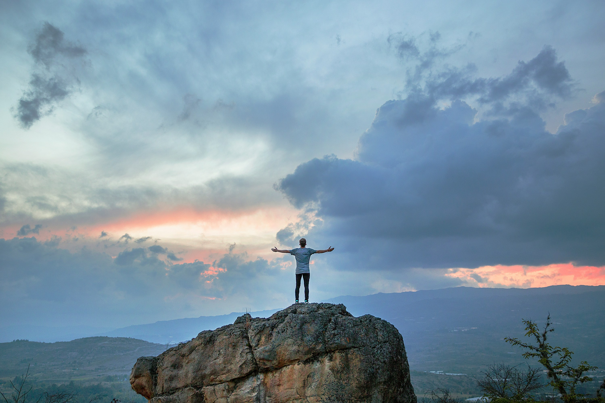

<div>
     

    <div class = "introduction_content_container">
        <p class="introduction_content_text">
            Trekking in India is one of the most popular tourism activities in India. India trekking take you heart of the India . India has various trekking destination for breathtaking, enthralling trekking tour package. 
            India trekking tour can do 3-5 days to till one month. In the vast amphitheatre of the Indian Himalayas and Karakorams, there are limitless possibilities for trekking, mountaineering. 
            Spectacular views apart, the Himalayan foothills are just ideal for trekking, offering energetic out-door people a different and exciting option for a holiday. 
            India has various trekking routes among them Markha Valley Trekking , Manali Ladakh Trekking , Ladakh Zanskar Trekking , Nubra Valley Trekking , Markha Valley & Rupshu Trekking , Ladakh Frozen Lake Trekking, 
            India Tsomoiri Lake Trekking, Ladakh Zanaskar trekking & Sikkim Darjeeling trekking main trekking in India.
            Trekking in India is amazing life time experience. Autumn & Spring season is best time trekking in India but We Himalaya Journey Trekking arrange India trekking tour around the year according to 
            travelers / trekkers wish and holiday schedule . Good physical fitness is required for all option India trekking . India trekking required special trekking permit through the government registered India 
            trekking Agency & We Himalaya Journey Trekking arrange all required trekking permit through partner agency of India. The Garhwal and Kumaon regions of Uttaranchal are the most popular destinations for trekkers, 
            though Chamba and Manali in Himachal Pradesh, and Ladakh and Zanskar in Jammu and Kashmir, have interesting trekking routes as well. All India trekking routes should be carefully chosen, as some treks may be 
            more difficult, or may involve high altitude trekking. It is generally advisable to be accompanied by a local guide. Ensure that the pace of the trek is not too rapid, since this could result in exhaustion, 
            and would in any case not be enjoyable. We Himalaya Journey Trekking generate India trekking tour route with appropriate for young and adult as per demand.
        </p>
        <div class="top_section_container">
            <h2 class="top_section">
                Top Indian Hiking Destinations
            </h2>
        </div>
    </div>
</div>